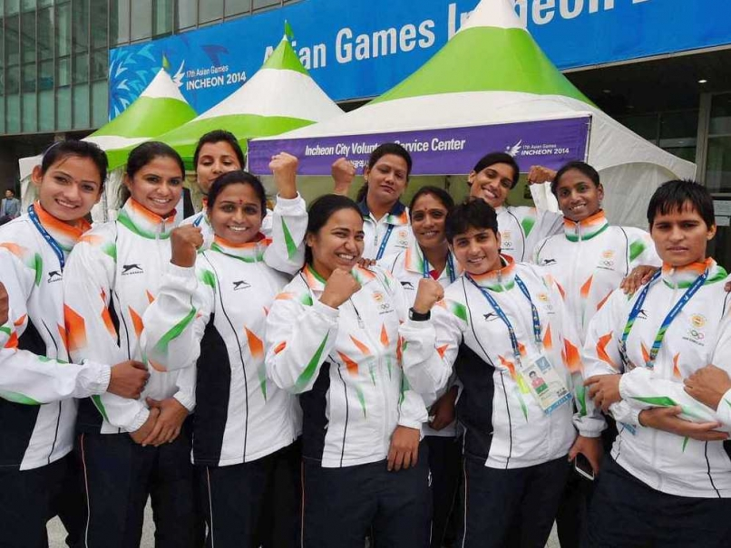

Pro Kabaddi League 2017 Season 5 start date announced
The Pro Kabaddi League Season 5 saw its auction take place on Monday and Tuesday, with 12 teams, including four new ones, vying for over 350 players. The date for the start of the new season has been announced and it will be July 28, which falls on a Friday.
details...
India The unbeaten champions of Kabaddi
India touched another milestone in 2004, when it hosted the first ever Kabaddi World Cup, in Mumbai. The country won the World Cup, as well. It has produced a number of talented Kabaddi players, so far, who have earned international recognition and brought laurels to the country. So far India is the unbeaten champion in Kabaddi World Cup.At a grand finale held at Guru Gobind Singh Multipurpose Stadium, the Indian men's team defeated Pakistan 45-42 for the fourth time, while the women team beat New Zealand 36-27 for the second time in a row.
details...
Indian women win first Kabaddi World Cup championship

India has won the first women's Kabaddi World Cup championship, beating Iran 25-19 in a thrilling game played in Patna, in the state of Bihar.
details...